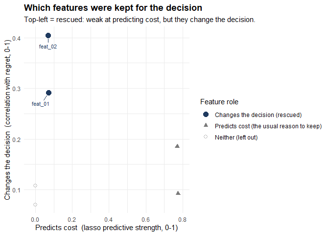
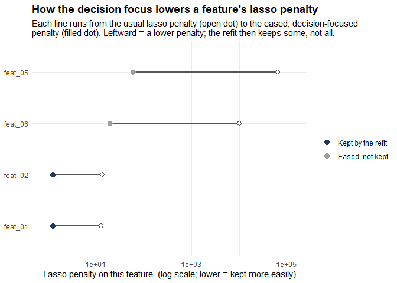
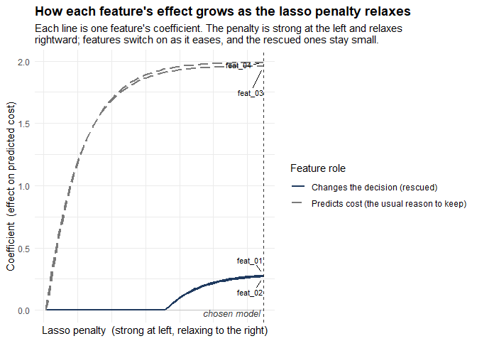
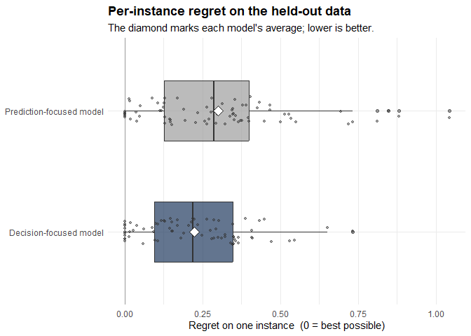

Feature selection for predict-then-optimise problems that chooses features for better decisions, not better predictions.
What it does
In a predict-then-optimise problem the decision is made before the true costs are known. Costs are estimated from features, then optimised over. Take routing a delivery along the shortest path, where the route is chosen before the day’s travel times are known: a feature like flood depth can flip which road is fastest while barely changing the overall time forecast. The same idea fits any predict-then-optimise problem, shortest path, knapsack, allocation or assignment, or a custom solver for one of your own.
The feature that predicts cost best and the feature that changes the chosen decision might be different ones, and dflasso keeps the second kind. An ordinary lasso ranks features by how well they predict cost. dflasso ranks them by how much they change the decision, eases the penalty on the ones that move the decision most, and refits. It then solves the problem on held-out data and compares its regret with a prediction-focused model’s. Regret is how much worse a decision turns out than the best possible in hindsight; lower is better.
The default plot shows this split directly: every feature placed by how well it predicts cost (horizontal axis) and how much it changes the decision (vertical axis). Features top-left are weak predictors that still change the decision; an ordinary lasso drops these, and dflasso marks the ones it keeps as rescued. Strong predictors that leave the decision unchanged sit bottom-right.

How it works
- Fit a lasso cost model on the training instances, where one instance is a single optimisation problem.
- Score each feature by how strongly its values track the held-out regret.
- Ease the penalty on the features that move the decision most.
- Refit the cost model under the eased penalties.
- Solve each held-out instance with the new predicted costs.
- Score regret against a prediction-focused baseline on the same instances.
Step 2 is the heavy one. dflasso resamples the instances, 15 times by default, and on each resample refits the lasso, re-solves the held-out instances, and correlates every feature with the resulting regret. That correlation runs in compiled C++, and the resampling loop runs in parallel when asked, through dfl_control(parallel = TRUE, workers = 8). The built-in shortest-path solver and the knapsack dynamic program are compiled C++ as well; capital allocation uses lpSolve.
Installation
Install from GitHub with pak:
pak::pak("Mischa-Hermans/dflasso")Or with remotes:
remotes::install_github("Mischa-Hermans/dflasso")Either call installs dflasso and the R packages it needs (glmnet for the lasso, lpSolve for the built-in solvers, ggplot2 for the plots), so there is no need to install those separately; DESCRIPTION lists the full set of libraries. dflasso needs R 4.1 or newer, and installing from source compiles C++, so build tools are needed: Rtools on Windows, the Xcode command-line tools on macOS, build-essential on Linux. Check for them with pkgbuild::check_build_tools().
A Docker image is also available, as an optional alternative to installing in R, with dflasso and its dependencies already installed, including the compiled C++, so no build tools are needed:
Quick start
capital_allocation_demo, one of two datasets bundled with the package, splits a budget across assets. The other, aid_routing, is the routing graph the vignette works through. The allocation data is a single data frame, one row per asset in each scenario, so the example runs without reshaping; its first instance, six assets, looks like this:
head(capital_allocation_demo[, c("scenario", "asset_id", "feat_01", "feat_02", "realized_return", "split")])
#> scenario asset_id feat_01 feat_02 realized_return split
#> 1 scenario_01 1 -0.128381935 -1.30982050 -1.742947 train
#> 2 scenario_01 2 -0.056131231 -1.04303952 -1.442683 train
#> 3 scenario_01 3 -0.016996481 -0.76719019 -1.483103 train
#> 4 scenario_01 4 0.007101835 -0.53860706 -1.467265 train
#> 5 scenario_01 5 -0.144638908 -0.26386447 -1.480053 train
#> 6 scenario_01 6 -0.097660480 -0.02440187 -1.262907 train
problem <- capital_allocation_problem(max_weight = 0.5)
train <- dfl_data(subset(capital_allocation_demo, split == "train"),
features = starts_with("feat_"),
cost = realized_return, scenario = scenario,
element_id = asset_id)
fit <- dfl_fit(train$x, train$cost, train$scenario, problem = problem,
element_id = train$element_id,
control = dfl_control(seed = 1))
fit
#> <DecisionFocusedLasso: solver, sense=max, 6 features, 4 kept, 150 instances scored>Each row is one element (here, one asset); the scenario column groups rows into an instance, which is one optimisation problem. See ?dflasso-glossary. To use other data, supply one row per element, a scenario column grouping rows into instances, and a realised-cost column; see ?dfl_data for the shape. For the problem, pick a constructor (capital_allocation_problem(), shortest_path_problem(), knapsack_problem()) or wrap a custom solver with optimization_problem().
Outputs
The calls below continue from the fit built in Quick start.
summary(fit) reports the kept features, the eased penalties, and what is known about held-out regret.
summary(fit)
#> Summary of a decision-focused cost model (dflasso)
#> Objective: maximise value over 150 instances scored, 6 features.
#>
#> FEATURES KEPT
#> 4 of 6 features were kept for the decision.
#> 2 of these are decision-driven rescues, weak at predicting cost on their own, but
#> they move the decision, so the model kept them:
#> feat_01, feat_02
#> See tidy(fit) for every feature, its coefficient, and its role.
#>
#> WHAT EACH FEATURE IS FOR (across all features, by how they behave)
#> decision-relevant 2 were kept for the decision (rescued by the decision step)
#> prediction-relevant 2 were kept by the accuracy step (the usual reason)
#> both 0 do both
#> neither 2 not used by either model
#> These roles come from one random reshuffle of the instances, so they can
#> shift a little under a different seed. Judge a feature by its score in
#> tidy(fit), not by the bare label.
#>
#> DOES THE DECISION FOCUS PAY OFF? (lower regret is better)
#> Regret = how much worse a decision was than the best possible in
#> hindsight, averaged over instances.
#> This needs held-out data. Run regret(fit, x_test, cost_test,
#> scenario_test) to compare against the prediction-focused model.
#> See ?dflasso-validation.
#>
#> HOW HARD FEATURES WERE FILTERED
#> Filtering strength 0.083, chosen automatically by trying many settings and
#> keeping the best; smaller keeps more features. (this setting is called
#> lambda)
#>
#> REPRODUCIBILITY
#> Fit with seed 1; re-running with this seed gives bit-identical features,
#> scores, and decisions. Pass seed = <int> to fix it up front and quote
#> that number.
#> Decision quality was averaged over 15 random reshuffles of the instances.
#>
#> SETTINGS
#> main : features put on a common scale, 10-fold cross-validation, instances must have >= 2 elements.
#> method: all at defaults.tidy(fit) puts one row per feature into a tibble, with each feature’s coefficient, decision-relevance score and penalty, ready to sort, filter or join:
tidy(fit)
#> # A tibble: 6 × 6
#> term estimate proxy_score adaptive_weight penalty_factor role
#> <chr> <dbl> <dbl> <dbl> <dbl> <fct>
#> 1 feat_02 0.268 0.405 13.8 1.24 decision-relevant
#> 2 feat_01 0.279 0.291 12.8 1.24 decision-relevant
#> 3 feat_03 1.96 0.185 0.298 0.298 prediction-releva…
#> 4 feat_04 1.99 0.0918 0.290 0.290 prediction-releva…
#> 5 feat_06 0 0.108 10211. 19.5 neither
#> 6 feat_05 0 0.0703 64503. 60.7 neitherThe penalty plot shows how far the decision focus lowered the lasso penalty on each feature it eased; a longer line means a bigger drop. Dark blue marks the features the refit then kept, as easing a penalty does not guarantee the feature is kept.
plot(fit, type = "penalty")
The coefficient path traces each feature’s effect as the lasso penalty relaxes, with the chosen model marked.
plot(fit, type = "path")
decide() turns features into weights on new data, and never reads costs. The training frame stands in for new data here, to keep the example short.
out <- decide(fit, train$x, train$scenario,
element_id_new = train$element_id)
out
#> Decisions for 150 instances (dflasso)
#> 150 reached a decision; 0 had no feasible decision.
#> Objective sense: maximise value.
#>
#> A look at two:
#> scenario_01 -> 2 of 6 chosen: 5, 6 (predicted total value -1.4)
#> scenario_02 -> 2 of 6 chosen: 1, 2 (predicted total value 1.9)
#>
#> -> decisions(x) for the full action per instance (named by the element ids);
#> as_tibble(x) for one tidy row per (instance, element), join-ready.
decisions(out)[["scenario_01"]]
#> 1 2 3 4 5 6
#> 0.0 0.0 0.0 0.0 0.5 0.5regret() scores both models on the held-out test split, the instances the fit did not train on.
test <- dfl_data(subset(capital_allocation_demo, split == "test"),
features = starts_with("feat_"),
cost = realized_return, scenario = scenario,
element_id = asset_id)
score <- regret(fit, test$x, test$cost, test$scenario,
element_id_test = test$element_id)
score
#> Decision quality vs the prediction-focused approach (dflasso regret)
#> Lower regret is better. Regret = how much worse a decision was than the
#> best possible in hindsight, averaged over instances.
#>
#> Decision-focused model : 0.22 average regret
#> Prediction-focused model: 0.30 average regret
#>
#> The decision focus cut regret by 25.4% on this held-out data.
#>
#> Measured on 75 of 75 instances (100%); 0 set aside for missing costs, 0 had no feasible decision. Both approaches were compared on the same instances.The demo is simulated, with two features that move the allocation while predicting return poorly. On other data the decision focus may help less, or not at all. The held-out regret() is how to tell.
The boxes show how the per-instance regret is spread around each average.
plot(score)
Beyond the built-ins
The package is not limited to its built-in problems. Any optimiser that turns predicted costs into a decision can be wrapped with optimization_problem() and used in place of a built-in problem. A model already written in lpSolve, igraph, ROI or a Python module can be wrapped rather than rewritten.
The solver is a single function, function(costs, instance): costs holds the predicted costs for one instance, one entry per element row in the original row order, and the function returns the decision as a numeric vector of the same length and order. The order must line up with the rows, and dflasso cannot check it. sense sets whether the objective is minimised or maximised.
For example, a custom binary linear program that picks the k cheapest elements, solved with lpSolve:
cheapest_k <- optimization_problem(
sense = "min",
solve = function(costs, instance) {
solution <- lpSolve::lp(
direction = "min", objective.in = costs,
const.mat = matrix(1, nrow = 1, ncol = length(costs)),
const.dir = "=", const.rhs = instance$k, all.bin = TRUE
)
as.numeric(solution$solution)
},
name = "cheapest-k"
)
solve_decision(cheapest_k, costs = c(5, 1, 4, 2, 3), instance = list(k = 2))
#> [1] 0 1 0 1 0solve_decision() is the quickest way to check a solver: the two cheapest of the five elements come back as a 0/1 vector in the original order. Anything the solver reads from instance reaches it only through instances, passed to dfl_fit(); make_instances(scenario, k = 2L) attaches k to every instance.
The fit is then the Quick start call with problem = cheapest_k and the instances added:
fit <- dfl_fit(train$x, train$cost, train$scenario,
problem = cheapest_k,
instances = make_instances(train$scenario, k = 2L),
element_id = train$element_id,
control = dfl_control(seed = 1))summary() reads as before. Because decide() and regret() re-solve, they need the same instances, passed as instances_new = and instances_test =; their decisions are now 0/1 picks rather than weights. See ?dflasso-solvers for worked assignment, transportation and spanning-tree solvers, and the order rules that matter for grid-shaped problems.
When regret is already known
A solver is only needed when dflasso must measure regret itself. When per-instance regret is already known, from a model that already runs, dfl_score() ranks the features by how strongly each tracks that regret, with no fit and no solver:
set.seed(6)
day_regret <- pmax(0, rnorm(45, mean = 4, sd = 2))
day <- rep(sprintf("day_%02d", seq_along(day_regret)), each = 3)
regret <- rep(day_regret, each = 3)
backtest <- data.frame(
day = day,
feat_demand = regret + rnorm(length(day), sd = 2),
feat_weather = rnorm(length(day)),
feat_noise = rnorm(length(day)),
regret = regret
)
dfl_score(backtest, features = starts_with("feat_"), scenario = day, regret = regret)
#> Which features track decision failures? (supplied regret, 3 features)
#>
#> rank feature score reading
#> 1 feat_demand 0.88 strongly tracks regret
#> 2 feat_noise 0.07 no association
#> 3 feat_weather 0.05 no association
#>
#> score = |correlation(feature, regret)|, 0-1.
#> Not a validated result: with no held-out decisions dflasso can't confirm this ranking.
#> Valid only if the regret is OUT-OF-SAMPLE from the model being diagnosed (>= 0, not in-sample, not dflasso's).
#> Association with decision failure. decide() needs a solver.regret_from_objectives() and regret_from_decisions() build that regret vector from objective values or decisions already recorded, and dfl_fit(regret = ...) fits the weighted lasso from supplied regret instead of solving for it.
Learn more
- Reference and articles: the pkgdown site.
-
vignette("humanitarian-routing", package = "dflasso"): the full worked example, on humanitarian routing. - Help pages:
?dflasso-glossaryfor the vocabulary, with?dflasso-faq,?dflasso-troubleshootingand?dflasso-validationalongside.
Getting help
- GitHub Issues: bug reports and feature requests.
Developed by Mischa Hermans, Research Master’s student in Econometrics and Operations Research at Maastricht University.